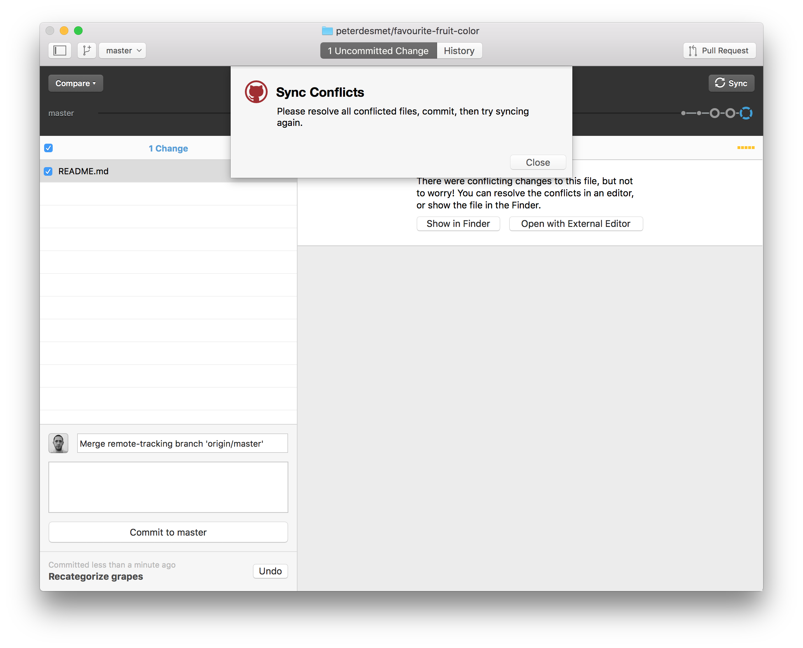
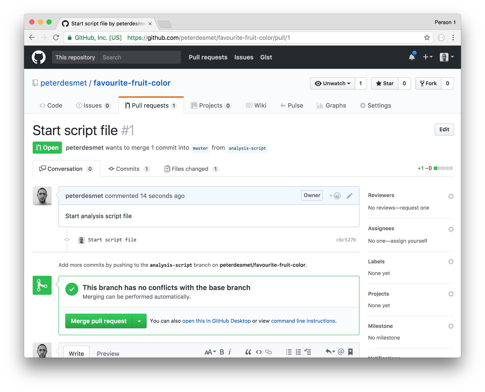

Git hands-on session with Github Desktop
Stijn Van Hoey, Peter Desmet
Make a commit
- Open your favourite text editor
- Update the
README.md
- Commit your changes
Make a commit

Push your changes to backup your work
click Sync
Go to your repo on GitHub to verify

Create logical commits
- Make 2 unrelated changes to your
README.md locally
- Create one commit for each change.
- Do not push (yet)
Create logical commits

Create logical commits

Create a conflict
Update your README.md on GitHub,
on a line you also edited locally

Conflict!
Try to push your local changes

Keep calm and resolve conflict
Open README.md in text editor:
<<<<<<< HEAD
A simple analysis to visualize my favourite fruit colour.
=======
A simple analysis to discover my favourite fruit color.
>>>>>>> origin/master
Choose what you want to keep:
A simple analysis to discover my favourite fruit colour.
Commit and sync
Add a file
- Add a
fruits.csv file in a /data directory
- Link to this file in the
README.md
Add a file

Undo or adapt last commit

Create a branch to experiment
- Create a branch
- Add an analysis file in a
/src directory
- Commit
- Switch between branches
Create a branch to experiment

Create a branch to experiment

Create a pull request to include your work
TODO: adapt, as we do this ONLINE instead

Review your pull request

Review your pull request
- Review
- If OK, merge pull request
- Delete branch
Exclude files
- in any programming language, some files are derivatives
- sensitive information (passwords,…)
- a folder with large data files that should not be in the history (and backuped elsewhere!)
- a temp/ folder for just garbage you create/…
.gitignore to the rescue!
Exclude files

Teaming up
- Team up with two or three persons
- Let one person invite the others, provide them with read/write access as explained in this tutorial
Invite collaborators

Invite collaborators

Collaboration: issues
- Raise an issue online
- Provide issues with an appropriate label
- Assign your colleague to the issue
Collaboration: online adaptations
- Make an adaptation to an online file
- Propose a pull request and assign your collaborator
- Merge the adaptation to the
master branch
Collaboration: local adaptations
Working local - merging online
- As collaborator,
clone the other repository to your local computer
- Create a new
branch with a different name
- Adapt the content of a file
commit your adaptationpush your branch to the remote repository- Go to GitHub and make a
pull request
- Revise the work and
merge online when appropriate
- Update your local work
- Check if all adaptations are represented in your local files
Tip: All functionalities are available in the previous sections
Release
Once you are satisfied with the status of your analysis, it makes sense to create a release:
- For publications (DOI)
- For code/software development versions
- For course notes
Follow this tutorial to create a release.
Some more advice:
- Commit often, make small commits
- Don’t mix changes in 1 commit
- Think about your commit messages
- Keep your code clean, avoid huge one-liners
- Use branches (!)
- Don’t keep long-lived branches (form of technical debt)
There’s no such thing, as a free lunch…